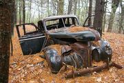

Wendigo. Stvoření z indiánské mytologie, které žije v oblasti severovýchodní Ameriky a Kanady. IJe stvořené z čistého kanibalismu a nikdy neukojeného hladu. Je zde spousta neuvěřitelných pověr o 13 Mile Woods ze severního Nového Hampshiru. Slyšel jsem příběhy o partách lovců, kteří byli tak vyhladovění, že se uchýlili ke kanibalismu. Nikdo mi nikdy doopravdy neřekl, co se tam venku děje. Tento příběh mi vyprávěl dědeček, který se setkal s lidmi, co přežili.
Byl to rok 1957. Jeho jméno bylo Arnold Watson. Miloval lov, a zbožňoval ho tak moc, že chodil na dlouhé lovy. Samozřejmě, že nikdy nechodil sám. Vzal s sebou staré přátele, Andyho Johnsona a Darrela Trembela. Neviděl je spousta let a tak vyrazili na týden dlouhý výlet. Zabalili si všechny své věci na lovení: lovecké pušky, přikrývky, stany, zápalky, týdenní zásobu munice a jídlo.
Všichni tři se sešli u Arnoldovo pick upu. Jízda přes špinavé, hrbolaté a klikaté silnice byla dlouhá. Byli zrovns hluboko uvnitř lesa, když začal motor dělat zvláštní, cvakavé zvuky, jakoby začal chcípat. Vůz zpomalil, až se zastavil úplně.
,, Naskoč sakra!“ řekl Arnold a kopnul do auta.
,, Naplnil si nádrž, než jsme vyjeli?“ zeptal se Andy.
, Asi jsem musel zapomenout,„ řekl Arnold, povzdechl si a sedl si na své místo, ,, musíme se tu někde poblíž utábořit, ale nechci chodit moc daleko od vozu.“
Tak se odvážili se vzdálit a našli hezkou mýtinku u řeky, kde si postavili stany. Začalo se stmívat a tak udělali táborák, dali si něco k snědku a šli spát. Spali se zbraněmi pod spacáky, jen pro jistotu. Všichni spali velmi tvrdě, celou noc…
Arnold se probudil jako první. Vstal, protáhl se a dlouze zívl. Vyšel ven před stan a promnul si oči. Nemohl uvěřit tomu, co viděl. Medvěd objevil jejich stanoviště, rozbořil ho a snědl všechny zásoby. Arnold běžel ke svému stanu, popadl pušku a namířil na medvěda. Ale zvuk jeho kroků vyplašil medvěda ještě předtím, než mohl vystřelit.
, Andy! Darrele! Vzbuďte se! Ten zatracenej medvěd snědl všechno naše jídlo!“ Andy a Darrel vylezli ven.
,, Co to tu sakra-„ začal Darrel, ale pak spatřil ty zbytky jejich jídla, rozházené okolo po trávě
Spousta nábojů do pušek bylo vhozeno do řeky, zůstalo jich jen pár.
,, No doprdele, co budem dělat? Nic tu nemáme! Žádné jídlo, žádnou munici, žádný-„
Andy ho umlčel, ,, Jen zachovej klid Darrele! Myslím si, že mám ještě nějakou munici v autě…“ odmlčel se.
,, Chlapi, pamatujete si cestu k autu?“ zeptal se Arnold nervózně.
,, Myslím si, že je to cesta… nebo, ne ta cesta… dobře, možná jsem na té cestě už byl…“ řekl Andy.
Darrel se pláců do čela.
,, Já doprčic vůbec nevím, o čem to tady kecáš!“ pustili se do sebe Darrel s Andy a začali se bít a nadávat
,, Hej, hej, hej, hej! Přestaňte!“ Odstrčil Arnold Darella od Andyho.
,, Musíme s tím něco udělat. Teď musíme hlavně přežít. Není čas na zábavu a hry. Můžeme tu snadno chcípnout a nikdo nás nikdy nenajde. To nejlepší, co teď můžeme udělat je to, že budeme následovat řeku. Možná najdeme město, nebo obchodní stanici nebo,“
,, Město? Tady? Jdi do háje. Jsme tu totálně sami. Nikdy nenajdeme cestu ven!“ Andy byl vždycky ten slabší. Nebylo překvapující, že se nechal zlomit tak brzo.
Šli podél břehu řeky, bylo chladno a byli hladoví. Schylovalo se k noci, ale oni nezastavovali. Uslyšeli zvuky křupání a lámání větviček, přicházející z lesa. Andy náhle ožil. ,, Co to sakra bylo?“ zašeptal Andy nervózně.
,, Asi jen zajíc ty posránku,“ zavrčel Darrel, ,, nebuď tak vyděšený.“
Po několika minutách si Andy sednul, aby si odpočinul.
,, Budu tu jen chvilku, jděte zatím beze mě,“ zafuněl.
,, Seš si jistej?“ zeptal se Arnold.
,, Jo, nebudu tu dlouho,“ ujistil ho Andy. A tak pokračovali. Najednou se lesem ozval hrůzostrašný výkřik:
,, DAAAAAAAARRRRRRRELLLLLLLLLLLLLEE!!!! AAAAARRRRRGHHHHHH!!! POMOZ MI-„
Najednou byl jeho výkřik uťat jakýmsli bublavým zvukem. Jakoby někdo něco požíral… Arnold a Darrel běželi podél potoka, křičíc Andyho jméno. Uslyšeli příšerné, hluboké zavrčení a spatřili siluetu něčeho vysokého a hubeného. Z tlamy toho stvoření cosi odkapávalo. Zavrčelo to a zmizelo to v lese.
,, Co to proboha bylo?“ zeptal se Darrel.
,, Jak bych to měl jako vědět? Zapal sirku, ať najdeme Andyho!“ Darrel škrtl sirkou a spatřil příšerné zvěrstvo. Andyho pozůstatky, ležící na chladné zemi.
Jeho hlava byla napůl sežrána, byla vidět bílá lebka. Jeho tvář pokrývala krev a vyvrhnuté maso. Celá jeho hruď byla vytrhnutá, ale jeho žebra byla na místě. Jeho vnitřnosti se leskly v měsíčním světle, napůl sežrané, napůl pokrývající trávu pod Andyho tělem. Jeho stehna byla rozdrcená a vykousnutá. Byla v nich vidět kost. Ale nejhorší ze všeho byl ten jeho příšerný, vyděšený výraz v obličeji. Jakoby byl zmrazen ve chvíli, kdy to monstrum spatřil.
,, Oh můj Bože…“ sesunul k zemi Darrel, chytnul se okolo kolen, schoulil se do klubíčka a začal mumlat nesmyslná slova
,, Proč on? Proč?“ šeptl.
Arnold se ho snažil uklidnit, ale on sám začal panikařit. ,, Musíme zmizet chlape. Oba jsme ho měli rádi, ale teď je s ním konec, musím jít dál-„ Darrel ho umlčel.
, Jak jen tohle můžeš říct? Chováš se, jakoby ti na něm vlbec nezáleželo. Miloval jsem ho jako bratra. Ty ses o něj nikdy nezajímal. Nikdy! Ty sebestředný bastarde!“ vrhnul se Darrel Arnoldovi po krku.
Přitiskl ho pevně k zemi. Arnold se snažil dostat z jeho sevření. Kopl ho kolenem do břicha a Darrel spadl na zem. Arnold začal nebohégho Darrela mlátit do obličeje. Arnold ho zvedl a přimáčkl ke stromu. Darrel se zhroutil k zemi, na kůře stomu zanechal svoji krev. Jeho oči zčernaly, vypadal tak… hladový po krvi. Arnold se zakousl do Darrelovo levé paže a vytrhl z ní kus masa.
,, Co… Co jsem to udělal?“
Podíval se na krev, pokrývající jeho ruce. Zůstal stát nad těly, nespal, jen si sedl na zem s prázdným výrazem a přemýšlel o tom, co právě udělal. Arnold si uvědomil, že jeho povinnost je dostat se do města a povědět lidem, co se tu stalo
Vstal a vydal se na cestu. Chodil celé hodiny. Pak za sebou uslyšel praskání větviček a křupání suchých listů. Cítil horký dech na svém krku. Pomalinku se otočil a spatřil tu bestii.
Žlutě zářící oči, parohy a tělo, které vypadalo napůl shnilé a sežrané. Okolo hrudníku bylo shnilé maso. Z pusy té bestie odkapávala krev a odpoadávaly kusy masa, její obličej na sobě měl hluboké jizvy v mimických svalech. Na místech, které nehnily, jako byla záda a ramena, se nacházela hrubá hnědá srst. Jedna z jeho paží byla sežrána na kost. Arnold začal utíkat a křičet, ale upadl. Ta stvoření mu zavrčelo do tváře a ukouslo mu kus z jeho nohy. Arnold vykřikl v šílené, bolestivé agónii, snažil se proklouznout pod tím stvořením a utéct, a pokud by se mu to podařilo, možná by ho zkusil i zabít.
Ale jenom to stvoření rozhněval. Znovu se na něj vrhlo, ale Arnold uskočil a spaldo to do řeky. Arnold spatřil svou šanci. Dokulhal se k řece, protože ho bolela noha z jeho pádu. I přes všechnu mučivou bolest se do šelmy pustil holýma rukama a snažil se ji utopit. Vrčelo to pod vodou, máchalo oklo sebe rukama a nohama, ale Arnold své sevření nepovolil. Sláblo to a sláblo, až to přestalo bojovat úplně. Arnold si povzdechl a vyčerpaně padnul na břeh řeky.
Na chvilku si odpočinul a ak se rozhodl, že půjde dál. Kulhal lesem až do rána, kdy našel cestu. Díky Bohu, pomyslel si,už je konec… Arnold stál chvíli na cestě, dokud okolo něho neprojelo auto. Z auta se vyškrábal jeden muž.
,, Ježiši, co se to stalo?“
zopakoval Arnold unaveně, ,, Já chci… Vysvětlit… Později… Vodu… Cesta… Prosím…“
Muž vypadal zmateně.
,, Samozřejmě, samozřejmě… Nech mě pomoc vám do auta.“ Arnold vlezl do mužoval auta a pořádně se napil vody z lahve.
Vyprávěl muži úplně stejný příběh, co jsem právě vyprávěl vám. Ten muž byl můj děda. Vzal Arnolda do nemocnice, ale ten zemřel kvůli infekci v ráně na noze.
Každou chvíli se vrátí lovci s povídačkami o dlouhých a hlasitých výkřicích, při kterých tuhne krev v žilách, nebo o kanibalistických bestiích. Ať už je to pravda nebo ne, něco číhá na 13 Mile Woods. Pokud se tam vypravíte na výlet a nejdete auto z padesátých let společně s rozbořeným tábořištěm, vraťte se. Proboha vraťte se. A pokud ne, Bůh vám pomáhej…